eyethinkphysiosync-vignette
Source:vignettes/eyethinkphysiosync-vignette.Rmd
eyethinkphysiosync-vignette.RmdThis is a toolbox for processing and analysing data from emotibit sensors. It will collate the physio data, re-running heart rate analyses with heart py, if required. It will then associate the data with logs, observational data, or output from a gorilla experiment, labeling the stimuli and attaching behavioural data. Finally, it contains tools for cross recurrence quantification analysis. It uses the eyethinkdata package, which will be installed if you don’t have it.
Here’s how to get the latest version (always recommended as there’s a fair bit of development going on)
devtools::install_github("dcr-eyethink/eyethinkphysiosync")
library(eyethinkphysiosync)
#> Loading required package: eyethinkdata
#> Loading required package: ggplot2
#> Loading required package: data.tableThere are three main stages to this process: processing the raw emotibit data, trimming and integrating the data with a record of participants’ experiences and behaviour, and then optionally running a cross recurrence analysis. In each case, there are single wrapper functions to achieve each of these in one command, but in this vignette I’ll walk through the steps to show you the process. We will be processing data from a little experiment in which three participants watched 60 second advert and a 2 minute clip of a drama show.
Emotibit pre-processing
The pre-processes is detailed on github. It’s in a separate document because those processes require some additional software and python code to be installed. Assuming that you’ve done that step, or another lab member has done it for you, you can now compile all the data that’s been pre-processed. This function goes through all the emotibit data folders and compiles the data for the DVs that are named. It saves the data out to a file, emotibit_data_comb.csv, and returns it as a datatable
processed_emotibit_data <- emotibit_compile(edv = c("HR","EA","ACC"),datafolder = "emotibit_data")
#>
#> Reading blue8_2024-02-13_11-37-17 HR EA ACC
#> Reading green6_2024-02-13_11-32-54 HR EA ACC
#> Reading red4_2024-02-13_11-27-08 HR EA ACCBehavioural data
Now we can gather the behavioural data so we know what the participants were doing and seeing, and importantly, when. We want this trial data in the form of a data.table, typically called td, that has one row per person, per stimulus that they saw. This could be one of many 30 sec ads a person sees, or a 2 hour movie that each person sees once.
Format of trial data and participant data
Here’s an example of the minimal information that we need in the trial data
fread("eg_td.csv")
#> pid eid starttime stoptime category condition item stim
#> <int> <char> <int> <int> <char> <char> <char> <char>
#> 1: 9848500 orange5 1701171020 1701171240 politics Yes yes_vid Yes.mp4
#> 2: 9848500 orange5 1701171269 1701171429 politics Yes no_vid No.mp4
#> 3: 9848771 blue4 1701173489 1701173709 politics Yes yes_vid Yes.mp4
#> 4: 9848771 blue4 1701173723 1701173883 politics Yes no_vid No.mp4
#> 5: 9848965 green6 1701175506 1701175726 politics No yes_vid Yes.mp4
#> 6: 9848965 green6 1701175747 1701175907 politics No no_vid No.mp4The first 4 columns here are required for the processes we will carry out below: pid the paritcipant ID eid the name of the sensor that the participant wore starttime The UTC time code (https://www.unixtimestamp.com) when the stimulus started stoptime end time of the stimulus
In addition you need one or more columns to pick out a unique trial or stimulus event (something that each participant only sees once). This could be the stimulus name, for example. Later we will be carrying out a cross recurrence analysis on all participants who experienced this same event, and this is how we will identify them.
Typically, I use more than one column, so that I can include information to identify types of trial or conditions. By convention, I use category, condition, item and stim columns, as we see here. But whatever is there will be populated throughout the data we generate. You can also include here any behavioural information about response to the stimuli, such as rating ro memory tasks. This data can be entered by hand into a spreadsheet, or taken from a experiment log, or derived from gorilla data.
Processing gorilla standardised task
Many of the experiments run in the eyethink lab use a standardized task called snappily AV block multiple stim types. There are functions to automatically process data from the various versions of this task to generate summary data.
There are 2 outputs here. pd is the participant data, and looks like this for our toy experiment
processed_gorilla$pd
#> Key: <pid>
#> pid eid exp_begin exp_ver exp_end age sex
#> <fctr> <fctr> <char> <int> <char> <num> <char>
#> 1: 10370290 orange4 13/02/2024 11:27 3 13/02/2024 11:31:27 48 male
#> 2: 10370446 green6 13/02/2024 11:32 3 13/02/2024 11:36:37 46 female
#> 3: 10370528 blue8 13/02/2024 11:37 3 13/02/2024 11:41:26 50 maleAnd the trial data
processed_gorilla$td
#> Key: <pid, stim, condition, category, item>
#> pid eid exp_begin exp_ver exp_end age sex
#> <fctr> <fctr> <char> <int> <char> <num> <char>
#> 1: 10370290 orange4 13/02/2024 11:27 3 13/02/2024 11:31:27 48 male
#> 2: 10370290 orange4 13/02/2024 11:27 3 13/02/2024 11:31:27 48 male
#> 3: 10370446 green6 13/02/2024 11:32 3 13/02/2024 11:36:37 46 female
#> 4: 10370446 green6 13/02/2024 11:32 3 13/02/2024 11:36:37 46 female
#> 5: 10370528 blue8 13/02/2024 11:37 3 13/02/2024 11:41:26 50 male
#> 6: 10370528 blue8 13/02/2024 11:37 3 13/02/2024 11:41:26 50 male
#> stim condition category item start_time stop_time watched
#> <fctr> <fctr> <fctr> <fctr> <num> <num> <num>
#> 1: LATE_MB.mp4 end narrative_order benz 1707823683 1707823742 58.7429
#> 2: pizza.mp4 man cluster pizza 1707823778 1707823873 94.2234
#> 3: LATE_MB.mp4 end narrative_order benz 1707823998 1707824057 58.7333
#> 4: pizza.mp4 man cluster pizza 1707824092 1707824186 94.2228
#> 5: LATE_MB.mp4 end narrative_order benz 1707824276 1707824340 63.9060
#> 6: pizza.mp4 man cluster pizza 1707824380 1707824474 94.4520
#> cluster.empathy.empathyslider1 cluster.empathy.empathyslider2
#> <num> <num>
#> 1: NA NA
#> 2: 31 66
#> 3: NA NA
#> 4: 78 26
#> 5: NA NA
#> 6: 15 85
#> cluster.empathy.rightslider cluster.familiarity.slider1
#> <num> <num>
#> 1: NA NA
#> 2: 80 12
#> 3: NA NA
#> 4: 25 75
#> 5: NA NA
#> 6: 75 25
#> cluster.familiarity.slider2 narrative.familiarity.scenefam
#> <num> <num>
#> 1: NA 0
#> 2: 51 NA
#> 3: NA 1
#> 4: 63 NA
#> 5: NA 0
#> 6: 41 NA
#> narrative.familiarity.showfam narrative.likeability.emotion
#> <num> <num>
#> 1: 61 35
#> 2: NA NA
#> 3: 75 67
#> 4: NA NA
#> 5: 75 29
#> 6: NA NA
#> narrative.likeability.like narrative.likeability.shop
#> <num> <num>
#> 1: 39 35
#> 2: NA NA
#> 3: 69 52
#> 4: NA NA
#> 5: 43 26
#> 6: NA NAAs well as the important trial start and stop times, we have the participants responses on the various rating tasks after each stimuli. We can now match up this trial information with the physiological data
Linking physio and behavioural
The function that joins together the behavioural and emotibit data is called physio_merge(). It can take a while as there is a lot of processing. Before doing so, it’s a good idea to run it with stop_at_plotcheck = T. This gives you a graphical representation of where you have emotibit and where you have gorilla data. Time is on the x axis, with days in different panels, and the different emotibit sensors are arrayed on the y axis. The emotibit sensor ids are read off from the SD cards for the emotibit data, and entered by the participant in the gorilla data.
physio_merge(processed_emotibit_data ,processed_gorilla,stop_at_plotcheck = T )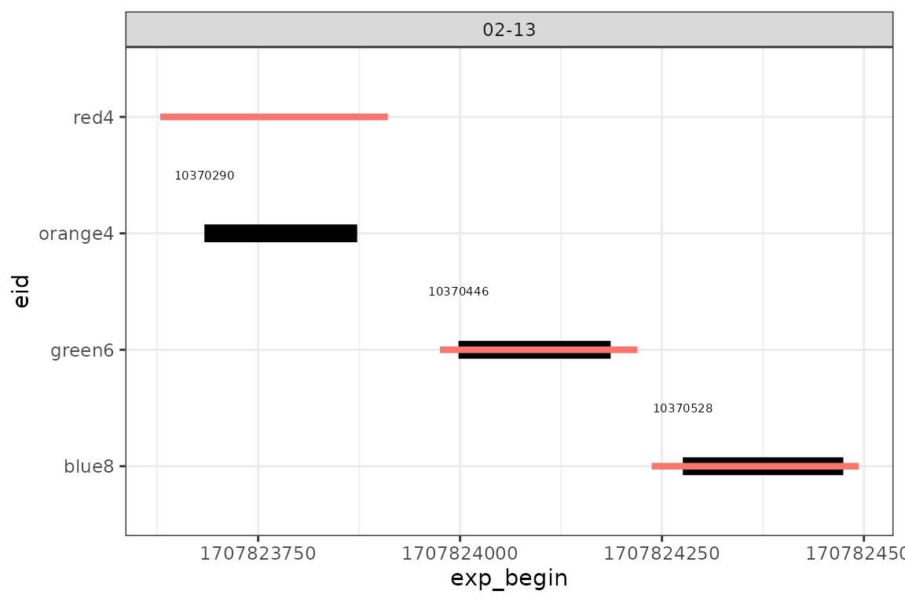
The black lines are where you have gorilla data (with the pids written nearby), and the red lines are the period for which you have physiological data. In a perfect world, all the red lines would appear over the black bars. But you may get times where the red lines don’t fully cover the black areas, where the sensor battery gave out for example, or someone forgot to start recording. Another error that can occur is that the red lines will systematical be an hour off of the black bars in every case. This suggests that there has been some problem with the time zones. The emotibit chips don’t handle British daylight savings very well. To correct for this, re run emotibit_compile() with hour_adjust = 1 or -1.
A further thing is look out for are times in which you have a black bar and a red line at the same time, but they aren’t in top of each other. That has occurred at the top of this plot above. A reasonable explanation is that the participant has entered the eid incorrectly. Here they appear to have mistake the red case for an orange (to be fair, it is an orangey-red). Other typical mistakes are putting a 9 for a 6, for example. It’s a good idea to confirm these errors by looking in the experiment log, where they experimenter should have noted the eid as well as a back up.
There’s a function to handle those corrections quickly. You just give it a data.table of pids and their correct eids, and it will go through your pd, td and any other data passed in a list to make correction. Then we can rerun the merging process and store it.
processed_gorilla <- gorilla_eid_corrections(processed_gorilla, corrections=data.table(pid=c(10370290),eid=c("red4")))
#> These cols were repeated in datatable 2 and used to replace earlier ones
#> [1] "eid"
#> These cols were repeated in datatable 2 and used to replace earlier ones
#> [1] "eid"
data <- physio_merge(processed_emotibit_data ,processed_gorilla)
#> | | | 0% | |============ | 17% | |======================= | 33% | |=================================== | 50% | |=============================================== | 67% | |========================================================== | 83% | |======================================================================| 100%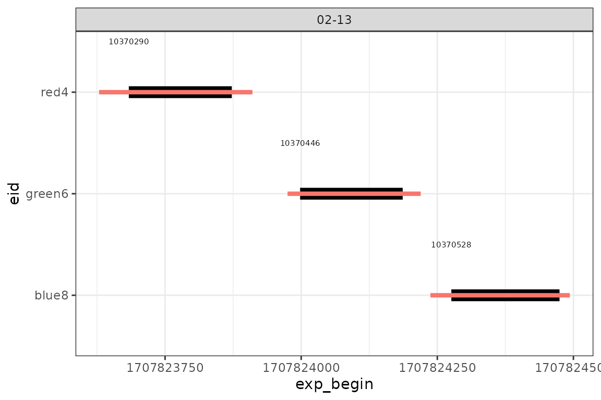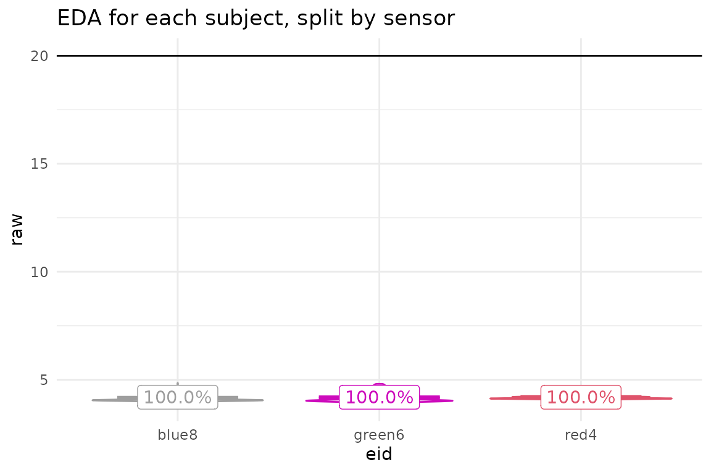
The physio_merge function spits out the plot to check your data alignment, as before, and also a plot of the eda data per person and emotibit sensor. There is a threshold (20 by default, shown as a line on the plot) such that if the mean EDA reading for someone is below that, we set filter=0 and they get excluded. Also we exclude people where the range of EDA values is small (default <0.03). In there cases that’s either someone who is very sweaty or not at all sweaty, or a misplaced sensor. We also set filter=0 for individual measurements that are outside of thresholds (defaults <.01 & >25). In the trial data, td, we summarize how many measurements were excluded from each trial (you might want to throw out trials with less than a certain % of valid meaurements), and the average of those values for each person is reported as % in the plot.
The main output of this function are the set of data.tables that give you the emotitbit measurements moment by moment (ed), the trial data (td) where those are summarized over trials, the participant data (pd) summarized over people and the stimuli data (sd) summarized over stimuli items.
You can look at the tiemcourse by plotting data$ed:
#> `geom_smooth()` using method = 'gam' and formula = 'y ~ s(x, bs = "cs")'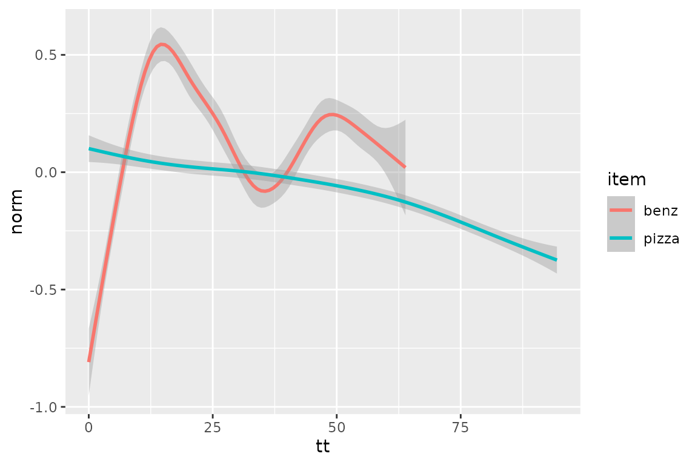
However, using geom_smooth() sometimes results in too much smoothing. As an alternative for plotting, physio_merge() also outputs data$dm, which has each dv averaged over all participants in 1 second time bins, with the metrics of raw and morn scores. This can be plotted with geom_line()
ggplot(data=data$dm[metric=="norm" & edv=="EA"],aes(x=t,y=y,colour=item))+geom_line()+theme_bw()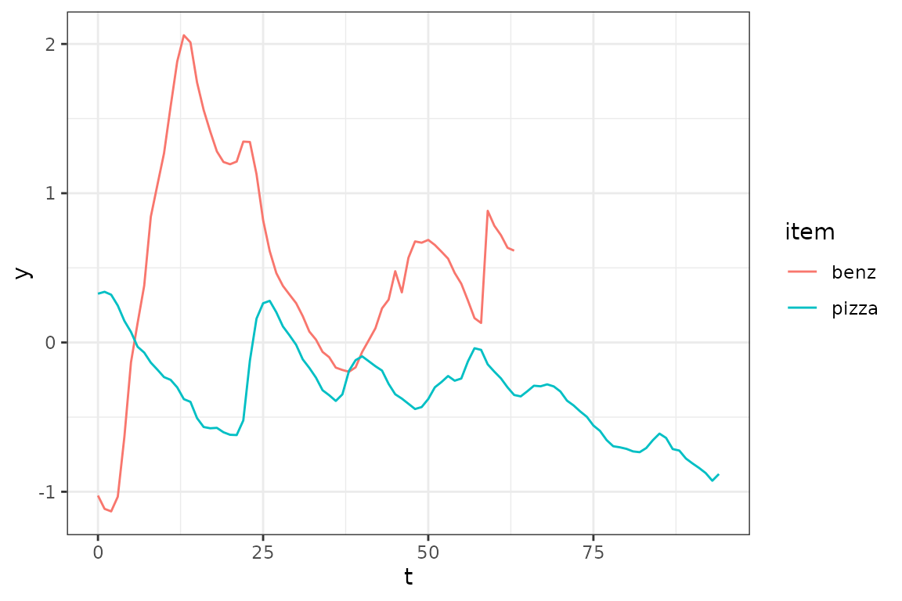
The whole data list of different data types can be saved out into separate .csv files with one command. It will put them in a folder called ‘processed’ by default, or you can specify a different name
saveout_datalist(data)If you are just interested in the behaviour and the physiological response of individuals, you can stop here. Or, in the next step, we take the ed data and calculate the physiological synchrony between these signals using cross recurrence analysis.
Cross recurrence analysis
In this toolbox we use Dale and Coco’s (21014) CRQA methods paper and R toolbox. This package adds a set of function that basically iterate the crqa() function over lots of trials and pairs of dyads. Here we have run the crqa_trials() function over our data of 3 participants watching two trials. We’ve turned on option to draw the pairs of time series for each pair of heart rate time series.
#> HR item: narrative_order§end§benz§LATE_MB.mp4 progress 50 %
#> | | | 0% | |======================= | 33%
#> Warning: no DISPLAY variable so Tk is not available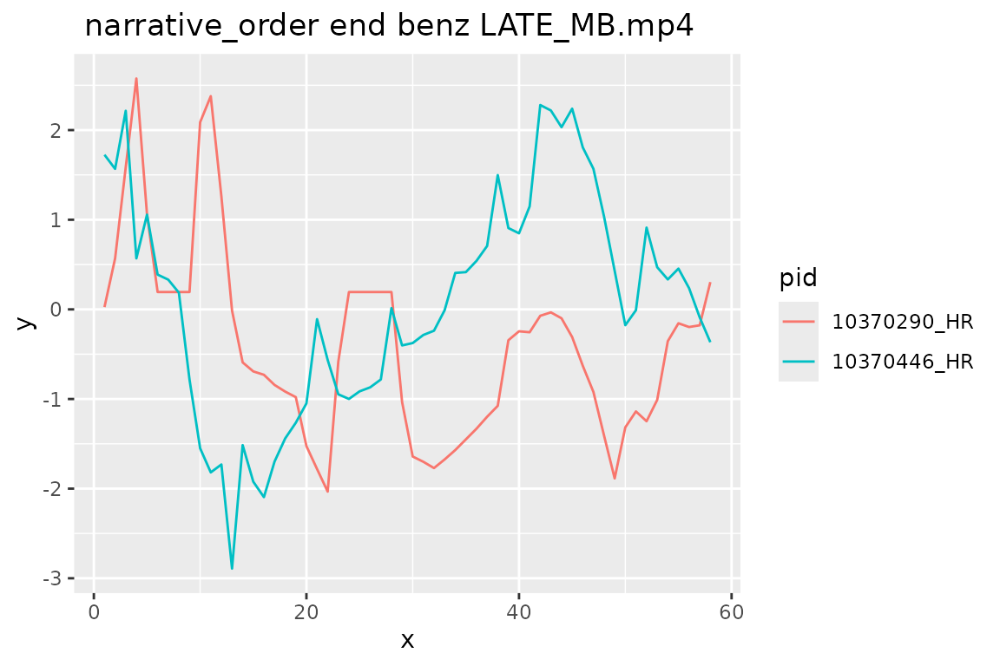
#> | |=============================================== | 67%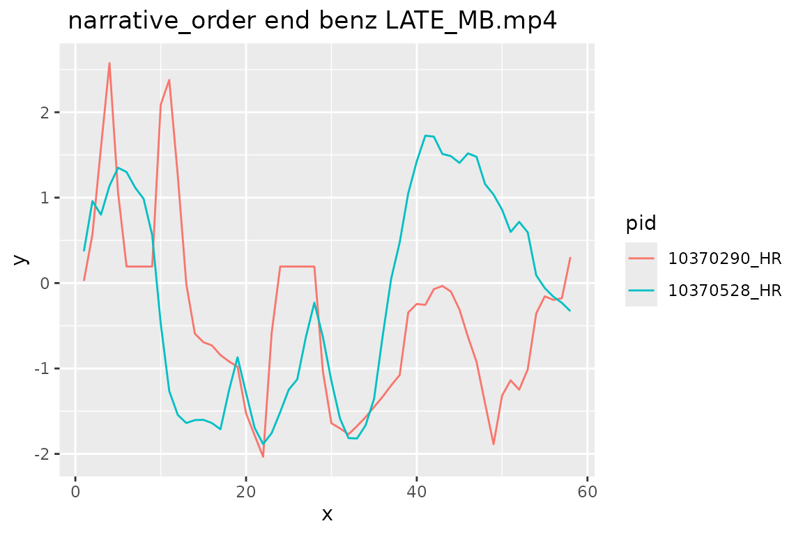
#> | |======================================================================| 100%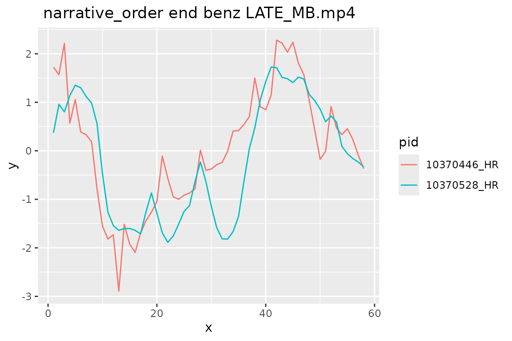
#>
#> HR item: cluster§man§pizza§pizza.mp4 progress 100 %
#> | | | 0% | |======================= | 33%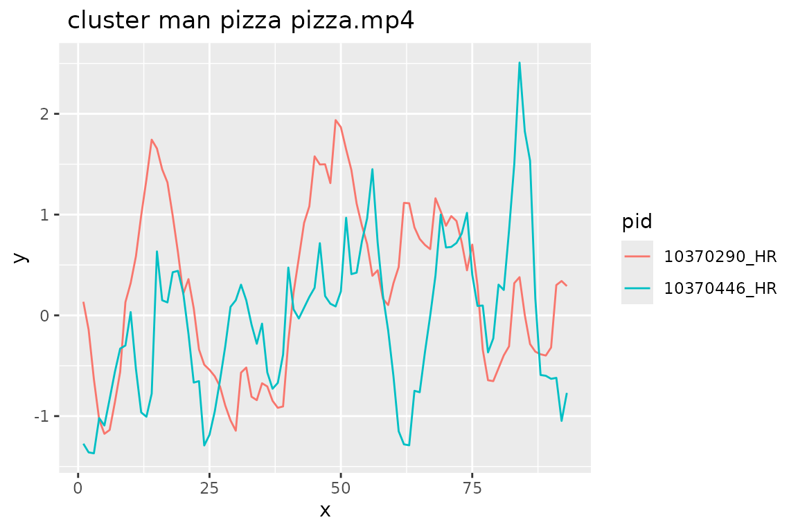
#> | |=============================================== | 67%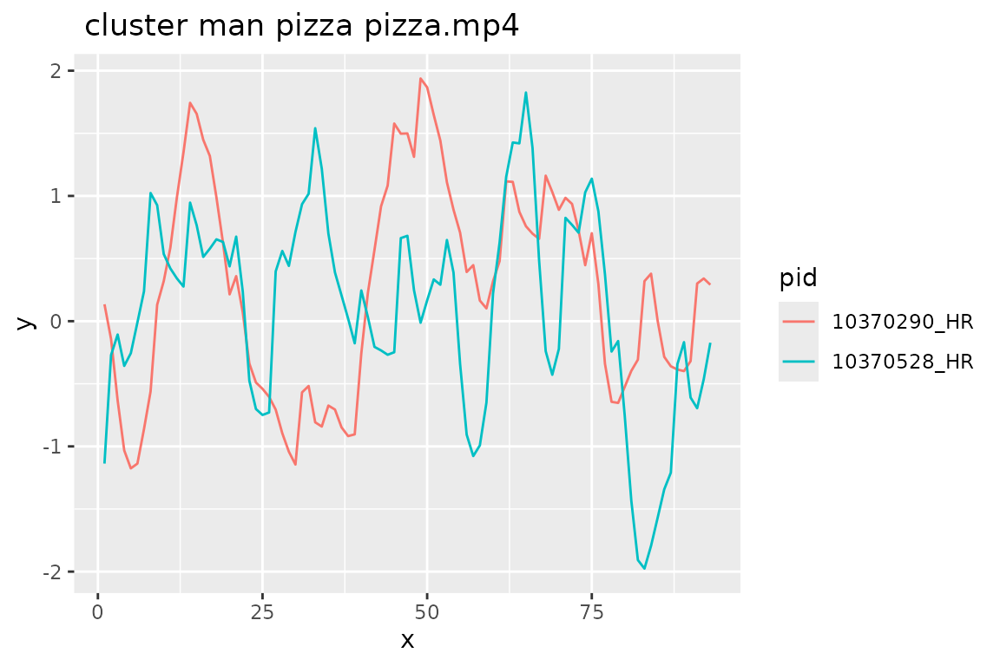
#> | |======================================================================| 100%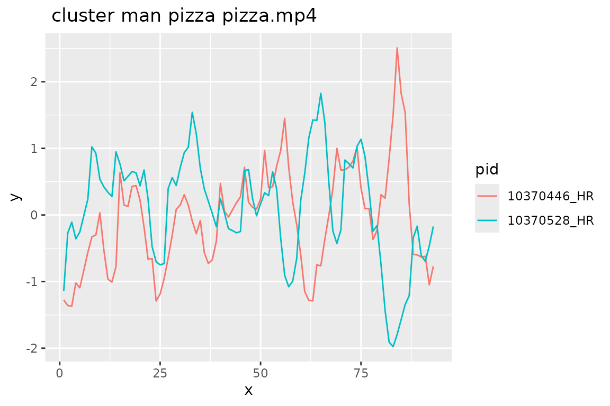
#>
#> That took me
#> user system elapsed
#> 0.0154666667 0.0001333333 0.0184000000The function returns crqa stats on every pairwise comparison for every trial.
hr_crqa
#> category condition item stim edv
#> <char> <char> <char> <char> <char>
#> 1: narrative_order end benz LATE_MB.mp4 HR
#> 2: narrative_order end benz LATE_MB.mp4 HR
#> 3: narrative_order end benz LATE_MB.mp4 HR
#> 4: cluster man pizza pizza.mp4 HR
#> 5: cluster man pizza pizza.mp4 HR
#> 6: cluster man pizza pizza.mp4 HR
#> gid dyad pid1 pid2 RR
#> <fctr> <int> <char> <char> <num>
#> 1: narrative_order§end§benz§LATE_MB.mp4 1 10370290 10370446 21.44970
#> 2: narrative_order§end§benz§LATE_MB.mp4 2 10370290 10370528 23.74260
#> 3: narrative_order§end§benz§LATE_MB.mp4 3 10370446 10370528 21.81953
#> 4: cluster§man§pizza§pizza.mp4 1 10370290 10370446 19.81768
#> 5: cluster§man§pizza§pizza.mp4 2 10370290 10370528 21.27097
#> 6: cluster§man§pizza§pizza.mp4 3 10370446 10370528 16.03911
#> DET NRLINE maxL L ENTR rENTR LAM TT catH
#> <num> <num> <num> <num> <num> <num> <num> <num> <num>
#> 1: 63.44828 33 20 11.151515 2.282987 0.9187414 87.41379 7.242857 NA
#> 2: 73.36449 49 24 9.612245 2.018567 0.8123311 97.19626 6.709677 NA
#> 3: 55.25424 30 18 10.866667 2.118279 0.9199570 98.64407 6.000000 NA
#> 4: 52.46667 92 16 8.554348 2.042916 0.8519621 89.66667 4.769504 NA
#> 5: 70.99379 108 27 10.583333 2.551037 0.8379103 95.21739 5.656827 NA
#> 6: 46.78748 61 21 9.311475 2.248248 0.8765273 94.06919 4.680328 NA
#> tid1
#> <fctr>
#> 1: 10370290-narrative_order-end-benz-LATE_MB.mp4
#> 2: 10370290-narrative_order-end-benz-LATE_MB.mp4
#> 3: 10370446-narrative_order-end-benz-LATE_MB.mp4
#> 4: 10370290-cluster-man-pizza-pizza.mp4
#> 5: 10370290-cluster-man-pizza-pizza.mp4
#> 6: 10370446-cluster-man-pizza-pizza.mp4
#> tid2
#> <fctr>
#> 1: 10370446-narrative_order-end-benz-LATE_MB.mp4
#> 2: 10370528-narrative_order-end-benz-LATE_MB.mp4
#> 3: 10370528-narrative_order-end-benz-LATE_MB.mp4
#> 4: 10370446-cluster-man-pizza-pizza.mp4
#> 5: 10370528-cluster-man-pizza-pizza.mp4
#> 6: 10370528-cluster-man-pizza-pizza.mp4Typically, we also want these pairwise comparisons data aggregated over trials, conditions or stimuli items. There is a wrapper function crqq_full() that will do this step too. Also, above we specified various crqa parameters like embedding and delay. From lots of experiences, we have a set of standard values that we use by default. The crqq_full() function runs a set of specified analyses using these defaults and returns the full rqa table, and updates our data list with averages over trials, people and stimuli items. By default it will run crqas for HR, EA and a multidemensional HR.EA combination, and windowed analyses. But you can also specify a subset of these. Here I’ve just asked for EA and windowed EA which give us time course information, since those are the measures that we have found are the best indicators of engagement.
#> EA item: narrative_order§benz§LATE_MB.mp4§end progress 50 %
#> | | | 0% | |======================= | 33% | |=============================================== | 67% | |======================================================================| 100%
#> EA item: cluster§pizza§pizza.mp4§man progress 100 %
#> | | | 0% | |======================= | 33% | |=============================================== | 67% | |======================================================================| 100%
#> That took me
#> user system elapsed
#> 1.600000e-03 1.666667e-05 1.300000e-03
#> Proportions where we have no RR data
#> edv V1
#> <char> <num>
#> 1: EA 0
#> Proportions where we have no DET data
#> edv V1
#> <char> <num>
#> 1: EA 0
#> EA item: narrative_order§benz§LATE_MB.mp4§end progress 50 %
#> | | | 0% | |======================= | 33% | |=============================================== | 67% | |======================================================================| 100%
#> EA item: cluster§pizza§pizza.mp4§man progress 100 %
#> | | | 0% | |======================= | 33% | |=============================================== | 67% | |======================================================================| 100%
#> That took me
#> user system elapsed
#> 0.0173666667 0.0003333333 0.0162666667That probably took a matter of seconds, since we only have 3 people watching 2 stimuli. But since pairwise comparisons are at the heart of crqa, you’ll find that processing time increases rapidly with increasing participant numbers and stimuli lengths. We now have all the pairwise comparisons stored in data$r, we have windowed timecourse data in data$rw, the trial information in data$td has been updated with summary stats for each participant’s trial, and we have averages for each stimuli item in data$sd. We can now visualise these.
Visualising item and condition differences
The means for the trial can be plotted like any other DV such as accuracy or reaction time using data$td. Of course, with only 2 trial and three people these differences are meaningless here.
pirateye(data$td,dv="DET_EA",x_condition = "item", violin=F)
You could also look for correlations between their DET scores and their explicit ratings in the trial data, or between the item mean DET scores in data$sd and some external measure of engagement or success (such as sales figures, youtube likes, etc). The exclorr() function in eyethinkdata package maybe of use here.
Also data$dm, the data table of time binned means, has been updated with the crqa metrics. You can use that that as above to plot time course
ggplot(data=data$dm[metric=="DET" & edv=="EA"],aes(x=t,y=y,colour=item))+geom_line()+theme_bw()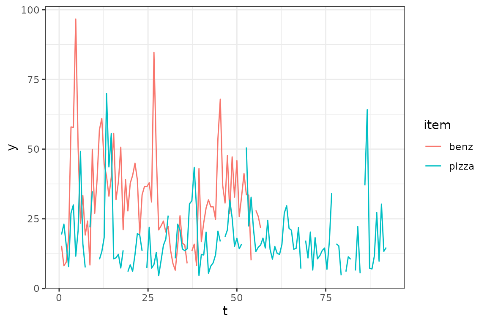
There is also a built in plotter for timecourse data that will smooth the plot a little. You just specify the metric and the dv that you want. You can tell it what column to use to split the data in different lines. So to contrast the two items:
physio_timeplot(data,plotmetric="DET",plotdv = "EA",contrast="item")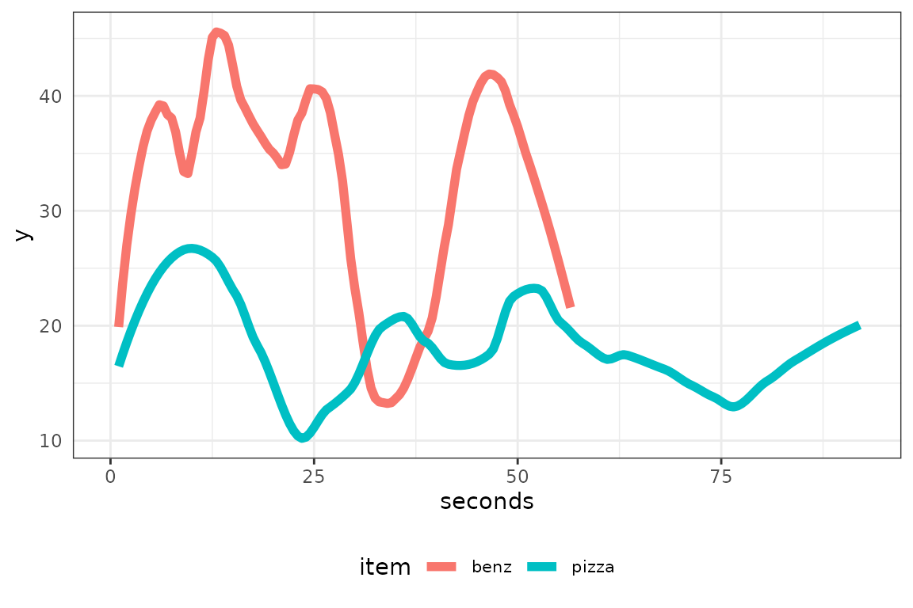
Or you can select what data to show by passing a data.table to selection. This will be matched to all rows in the data
timeplot <- physio_timeplot(data,plotmetric="DET",plotdv = "EA",selection = data.table(item="benz"))
timeplot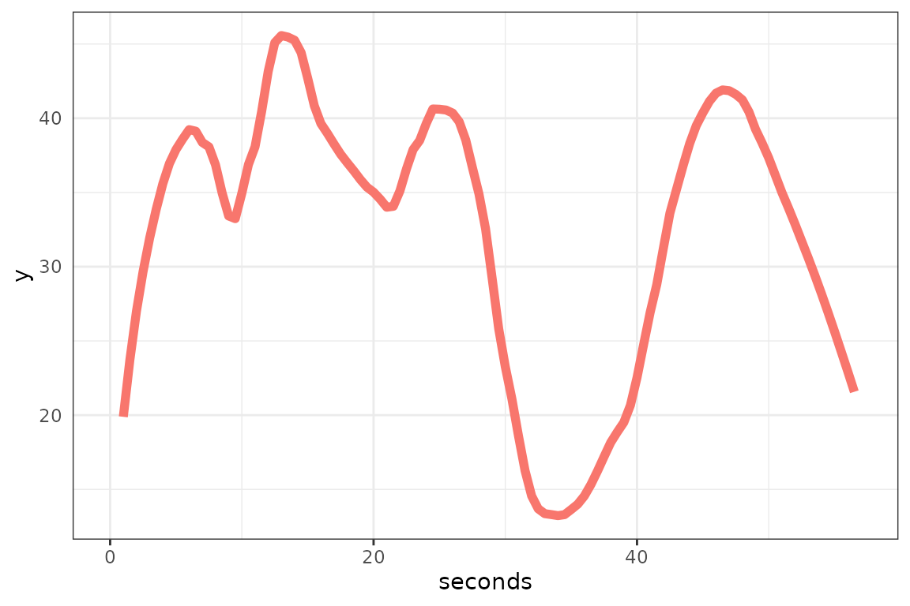
You can also make a composite movie, with an animated version of the plots added to the stimulus movie. For this to work you need to have installed the packages gganimate and av into R, and also downloaded the application ffmpeg from https://ffmpeg.org. You can pass the plot that you have made with physio_timeplot(), as above, or just pass it the variables that physio_timeplot() needs and it’ll make a new one. So the command below will animate the plot above and composite it with the benz.mp4 video.
physio_movie(timeplot = timeplot,stimfile = "stim/benz.mp4")Here’s what that would output if run: